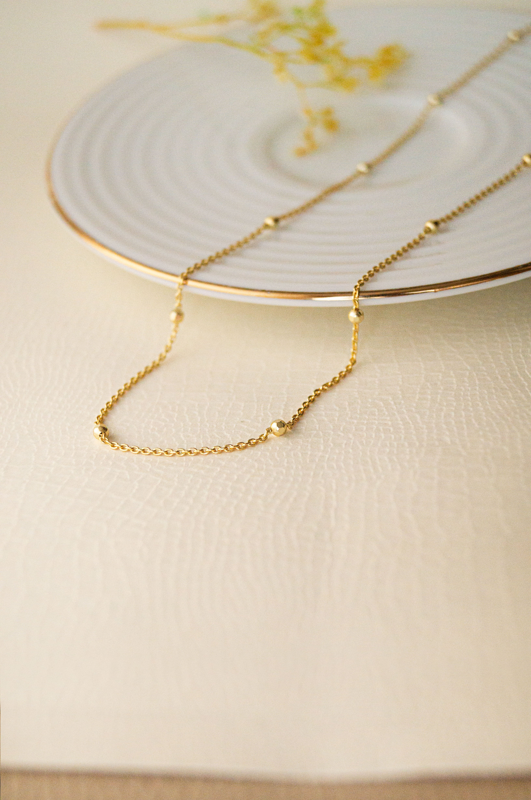
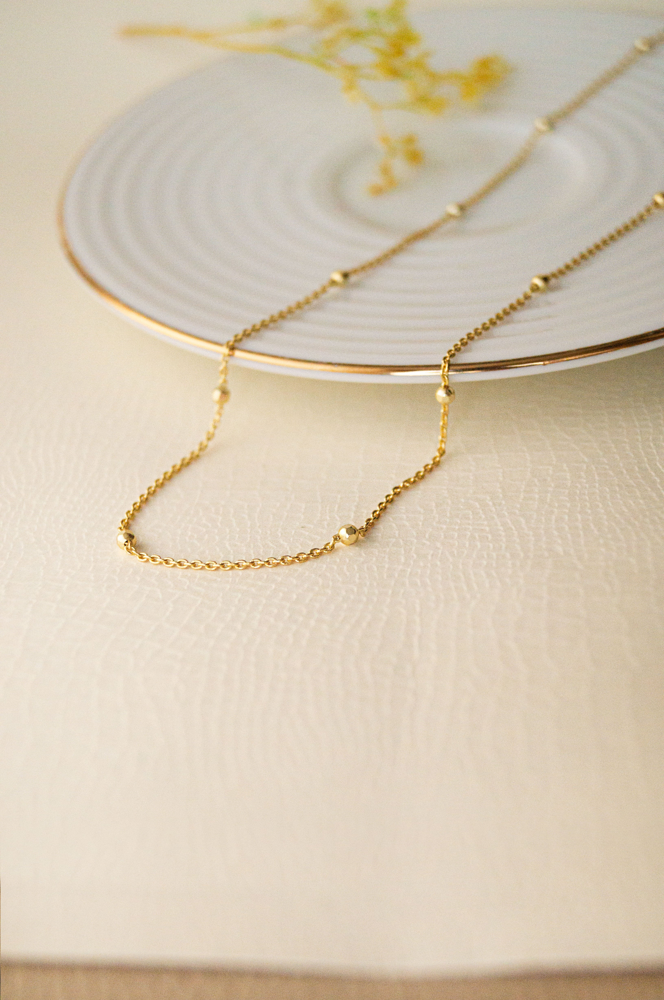

Hi, I’m Delta!
UX Designer + Innovation enthusiast
I’m a graphic designer transitioning into UX design with a strong foundation in client-focused design and recent training in UX through Google Coursera. Over the past five years, I’ve been freelancing - working with illustration, artworks, logo design, branding, NFT projects, media, print etc.
I developed a passion for UX because it allows me to create experiences that are not just visually compelling but also interactive and engaging. UX design allows me to craft solutions that people don’t simply look at—they actively engage with them.
When I’m not designing, I’m usually creating or exploring. Whether it’s travelling, playing piano and guitar, learning a new language (at the moment it’s Swedish), jewellery-making, or embroidery, I’m always seeking new experiences, looking for opportunities to grow and embracing my creative side. I’ve got a curious soul and a love for turning ideas into reality.

 
